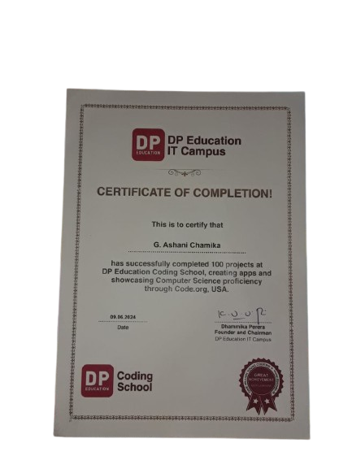
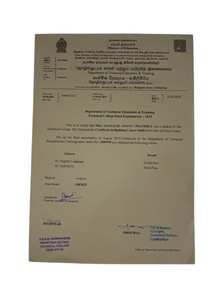

Building useful digital solutions with code & creativity.
I'm Ashani Chamika, an HNDIT undergraduate focused on software development, databases, web technologies and user-friendly systems.
Projects
Undergraduate
Curious mind. Practical builder.
I enjoy turning ideas into practical software that is structured, useful and easy to understand.
I'm currently pursuing a Higher National Diploma in Information Technology (HNDIT). Through academic projects, I have worked with web technologies, desktop applications, databases and software development concepts.
My current focus is strengthening my development skills, learning modern technologies and gaining real-world industry experience where I can collaborate, learn and contribute.
Learn continuously. Build thoughtfully. Improve every version.
Tools I use to bring ideas to life.
My academic work has given me hands-on exposure across development, databases, version control and design tools.
Development
Data & Platforms
Tools & Workflow
Concepts
Selected work & academic builds.
Click a project to explore its features and screenshots, or open the GitHub repository to view the source.
Education & professional direction.
Higher National Diploma in Information Technology
Sri Lanka Institute of Advanced Technological Education · Advanced Technological Institute, Tangalle
HNDIT · Current GPA 2.90G.C.E. Advanced Level · Technology Stream
Embilipitiya President College
Continuous Learning
Python for Beginners · Web Design for Beginners · AI Literacy and other professional development learning.
Grow into a capable technology professional.
I aim to contribute to real-world software projects, strengthen my technical skills, collaborate with experienced teams and create reliable, user-focused solutions.
Learning beyond the classroom.

Certificate / Completion
Certificate image supplied in portfolio package.

Certificate / Completion
Certificate image supplied in portfolio package.
Current learning listed in the CV includes Python for Beginners, Web Design for Beginners, AI Literacy, Computer Literacy, Building Career Skills and DP Education Coding School.
Let's connect and build something useful.
I'm interested in internship opportunities, collaborative projects and opportunities to grow through practical IT experience.